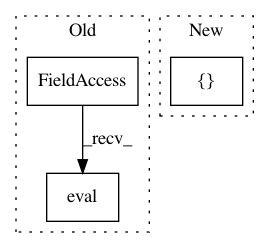

7dc2b014931e8d787fb845f70d4b244f104dfc08,tests/backend/test_common.py,,test_whctrs,#,171
Before Change
results0, results1, results2, results3 = keras_rcnn.backend.common._whctrs(
anchor)
results = numpy.array(
[keras.backend.eval(results0), keras.backend.eval(results1),
keras.backend.eval(results2), keras.backend.eval(results3)])
expected = numpy.expand_dims([1, 1, 0, 0], 1)
numpy.testing.assert_array_equal(results, expected)
After Change
results = numpy.array(
[keras.backend.eval(results0), keras.backend.eval(results1),
keras.backend.eval(results2), keras.backend.eval(results3)])
expected = numpy.expand_dims([16, 16, 8, 8], 1)
numpy.testing.assert_array_equal(results, expected)
In pattern: SUPERPATTERN
Frequency: 3
Non-data size: 3
Instances
Project Name: broadinstitute/keras-rcnn
Commit Name: 7dc2b014931e8d787fb845f70d4b244f104dfc08
Time: 2018-02-27
Author: jyhung@broadinstitute.org
File Name: tests/backend/test_common.py
Class Name:
Method Name: test_whctrs
Project Name: ikostrikov/pytorch-a2c-ppo-acktr
Commit Name: 4586366c1018257dd448d62f1fc7534e3f5a4338
Time: 2017-11-23
Author: ikostrikov@gmail.com
File Name: enjoy.py
Class Name:
Method Name:
Project Name: broadinstitute/keras-rcnn
Commit Name: 7dc2b014931e8d787fb845f70d4b244f104dfc08
Time: 2018-02-27
Author: jyhung@broadinstitute.org
File Name: tests/backend/test_common.py
Class Name:
Method Name: test_ratio_enum